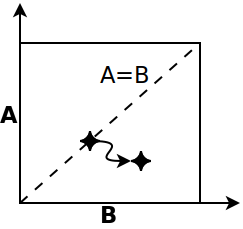
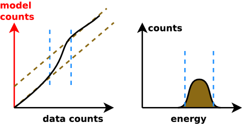

Advancing statistical methods for X-ray spectra
Kaffeerunde / Apr 2014
Johannes Buchner / MPE
in collaboration with A. Georgakakis, K. Nandra, L. Hsu, C. Rangel, M. Brightman, A. Merloni and M. Salvato
Buchner et al. 2014 - arxiv:1402.0004
X-ray spectral modelling of the AGN obscuring region in the CDFS: Bayesian model selection and catalogue
Introduction
- X-ray data + background data
- Set/fit background model
- Define source model 3-20 parameters
- Set Poisson likelihood (C-Stat), no re-binning
How to attack this parameter space?
Model comparison
Likelihood ratio tests / F-test
-  only if special case
- not at borders (feature detection)
- only if $n\rightarrow\infty$
- do not compute it, interpretation is wrong; critisize papers mis-interpreting the statistic
Pragmatic viewpoint
distinguish two models via data can use any statistic
does not have to be probabilistic
- can be counts in the 6keV bin
- determine discriminating threshold via simulations
- false association rate ($B\rightarrow A$, $A\rightarrow B$)
- correct association rate ($A\rightarrow A$, $B\rightarrow B$)
Comparison $\hat{L}$ vs. $Z$
 red: falsely choose powerlaw, for wabs input
red: falsely choose powerlaw, for wabs input
red: falsely choose wabs, for powerlaw input
$Z$ more effective than $\hat{L}$
Bayesian evidence $$ {P(A|D)\over P(B|D)} = {P(A)\over P(B)} \times {Z_A\over Z_B} $$
interpretation of Z-ratio under flat priors:
- prob. that this model is the right one, rather than the other.
- A, B or equal
More motivation
Best fit alone does not mean anything. Need uncertainties.
-
 1d search: underestimates uncertainties
1d search: underestimates uncertainties
- 2d contours: solve (computationally expensively) in 2d What about the other 10d?
- Fisher matrix/Hessian: only for simple correlations, not bananas
Example: Absorbed powerlaw on background


two solutions
Example: Absorbed powerlaw on background
 Occurs in real data
Occurs in real data
- We just do not know which solution is the right one (uncertain)
- keep both!
- measure both/all!
- not just in 2d, but n-dim; not user-specified
Nested Sampling
 draw randomly uniformly 200 points
draw randomly uniformly 200 points
always remove least likely point, replace with a new draw of higher likelihood
 converges to maximum likelihood, stops when flat
converges to maximum likelihood, stops when flat
MultiNest does it via clustering and ellipses
Nested Sampling with MultiNest
explores the problem in
- high dimensions (3-20)
- handles multiple maxima
- handles peculiar shapes
- runs efficiently to convergence
(typically 10000-40000 points)
measures and describes shapes (like MCMC)
Connecting
Need to connect C-stat calculation with algorithmBXA: Bayesian X-ray Analysis
- MultiNest for Sherpa / (Py)Xspec
- installed on ds42 under
/utils/bxa
- documentation: github.com/JohannesBuchner/BXA
Analysis
Likelihood value evaluated "everywhere"
 ML analysis: find confidence intervals
ML analysis: find confidence intervals
- defined via: how often the estimator (maximum) gives the right answer
- different for different estimators - property of the method
- credible intervals
- defined via: prob. that the true value is inside this range rather than outside is x%.
results coincide for some choice of prior (usually "flat").
How?
posterior "chain" from MCMC/nested sampling: representation through point density
| norm | $N_H$ | $z$ |
|---|---|---|
| -4.1 | 22.4 | 2.3 |
| -4.3 | 22.45 | 2.4 |
| -4.3 | 22.38 | 2.5 |
| ... | ... |
just make histogram of 1/2 columns
contains all correlations
Error propagation: example
| norm | $N_H$ | $z$ |
|---|---|---|
| -4.1 | 22.4 | 2.3 |
| -4.3 | 22.45 | 2.4 |
| -4.3 | 22.38 | 2.5 |
| ... | ... |
(norm, $N_H$, $z$, ...), set the model
- set $N_H$ = 0
- compute intrinsic flux
- compute luminosity
using $z$ and flux
incorporates uncertainty in $z$ and the parameters!
- just do your calculation with every value instead of one
model inadequacy
Have cool tools now, but:- Is the model right?
- Where is the model wrong?
- Systematic effects?
- Discover new physics beyond the model
Common route: residuals
New idea: Q-Q plot (no binning)good fit if straight line
Q-Q plot primer
Generate ideas for new models

Summary
-
(see 5.1, Appendix 3)Parameter estimation:
explore multiple maxima
general solution with nested sampling
-
Model comparison:
Likelihood ratio is less effective than Z ratios(see 5.2, Appendix 2)
computed by nested sampling; has right interpretation -
(see 5.3, Appendix 1)Model discovery:
Q-Q plots + model comparison